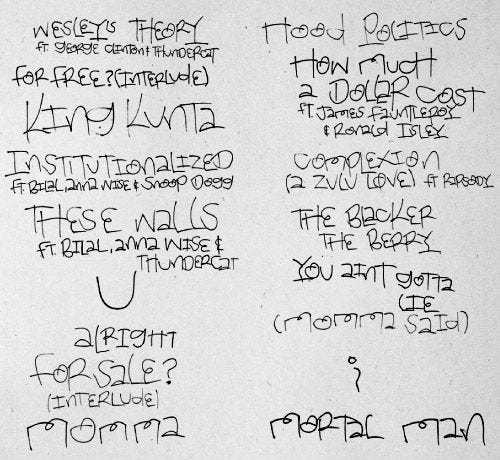
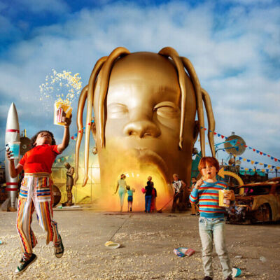
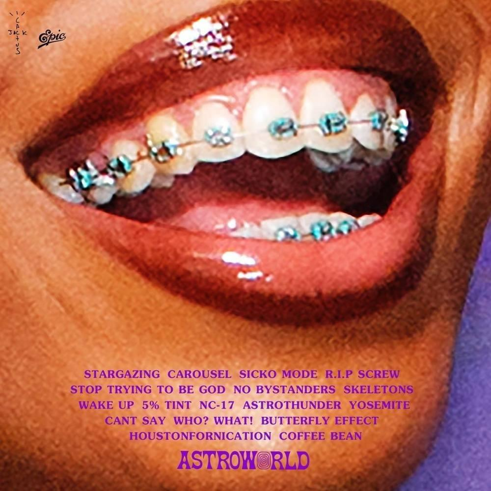
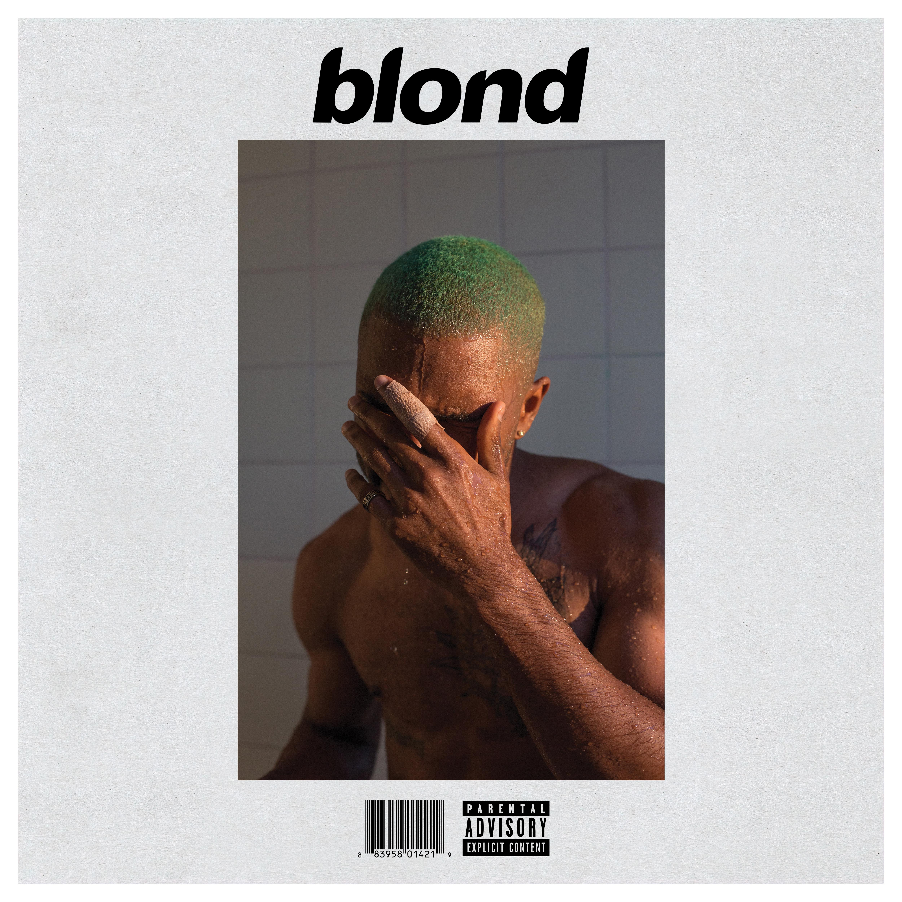
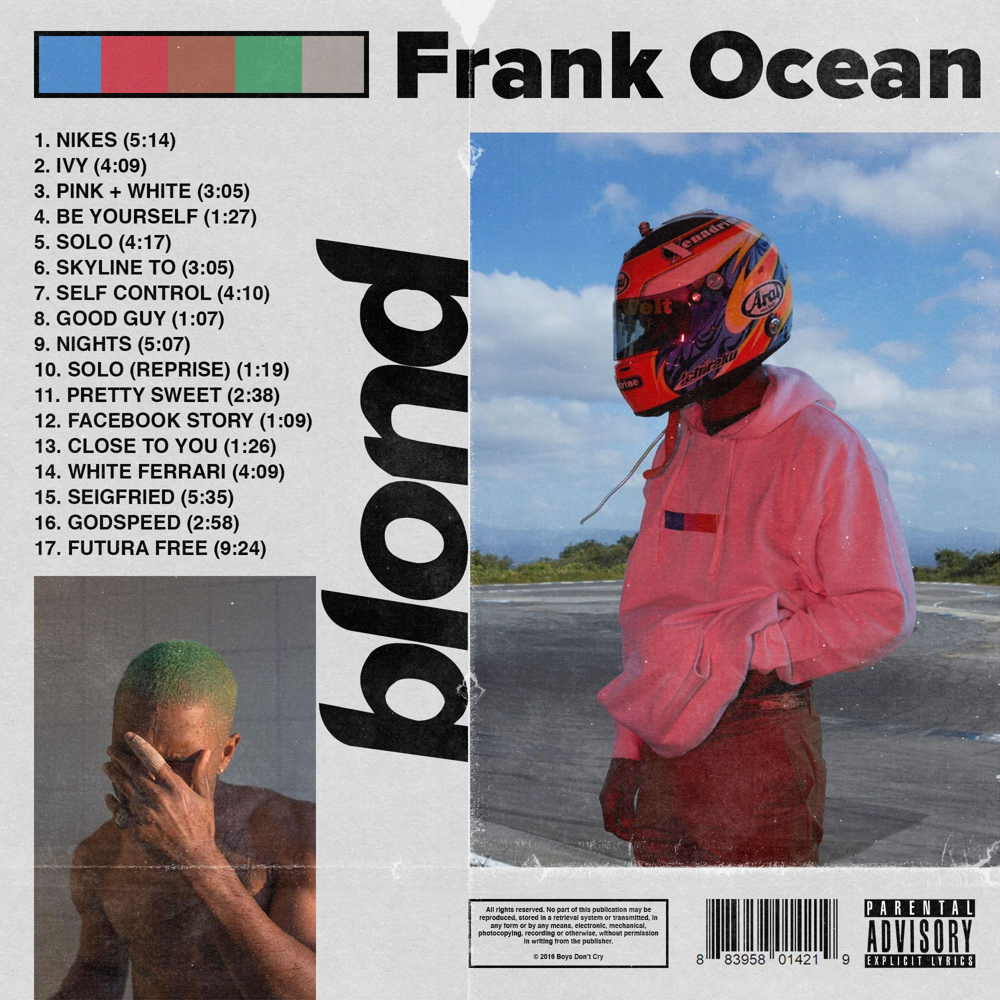
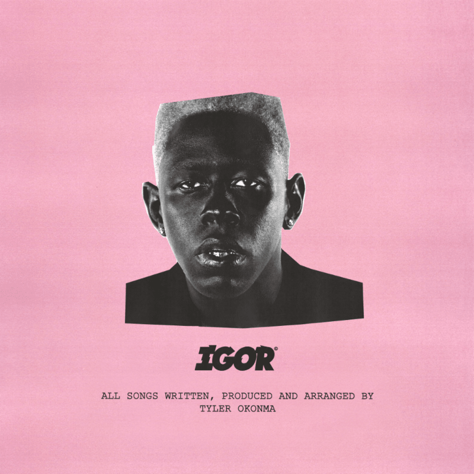
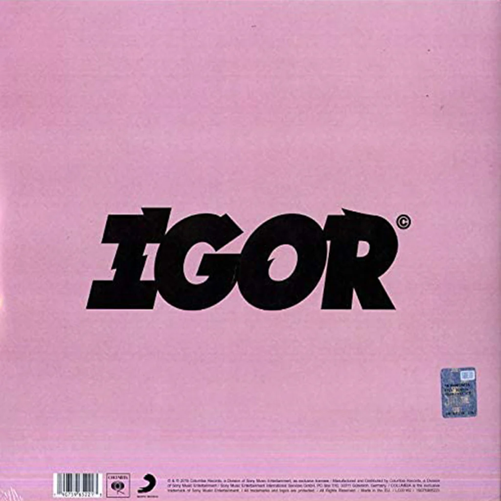

Albums
Albums
To Pimp A Butterfly – Kendrick Lamar (2015)


This was the first story telling Hip Hop album I’ve ever listened to. This critically acclaimed album’s themes vary from racism, addiction, self-esteem, and being focused on your goals. My memory with listening to it for the first time was just being mind blown. The intricate lyrics, jazz instrumentals, and spoken word sections made me really appreciate how deep music can be. The best written album of all time in my opinion. Kendrick made a statement with this body of work and I think everyone should check it out. Really good stuff.
ASTROWORLD – Travis Scott (2018)


ASTROWORLD was one of the albums that shaped my taste in music. I still remember being back in school for 10th grade in summer 2018 when this came out. The album is named after the old Houston theme park, and it sounds exactly like one. Many twists and turns, high and low moments, and a very colorful impact. It’s a big part of the reason Travis Scott is now my favorite artist. It’s a Hip Hop album, but also has elements of Pop, Soul, and R&B.
Blonde – Frank Ocean (2016)


Blonde was also one of the best first listens I’ve ever had. It’s a very soulful R&B album that is just pure feeling. Amazing singing performances that made me like non-hip hop songs even more. I first listened to it on a Wednesday morning in my room in 2018, I was just amazed at everything. It’s also my favorite album to listen during road trips, or any trip. It has an amazing atmosphere and can get you in touch with your feelings as a bonus (you might look like the album cover).
IGOR (eee-gore) – Tyler, The Creator (2019)


IGOR was not my favorite when I first listened to it. I was excited for it since it was my first Tyler album rollout ever, after I became a fan at the end of 2018. I only waited about 6 months for it, and the teasers got me excited. The night before it released, Tyler released a note telling us to listen without any expectations, this was going to be different from all of his other 5 albums at the time. I understood what he was talking about right after I listened to the album for the first time. This was not a rap album. It was soulful, pop, R&B. Raw feeling and melodies. It had some rapping here and there, but those were the big exceptions. At only 40 minutes of runtime, IGOR tells a love (or heartbreak, depending on how you look at it) story. I have to admit that the reason why it’s my favorite Tyler album so far is that it became too relatable. It’s also one of the albums that made me appreciate elements in music I never paid close attention to, like chords, bridges, and background vocals. Amazing body of work.